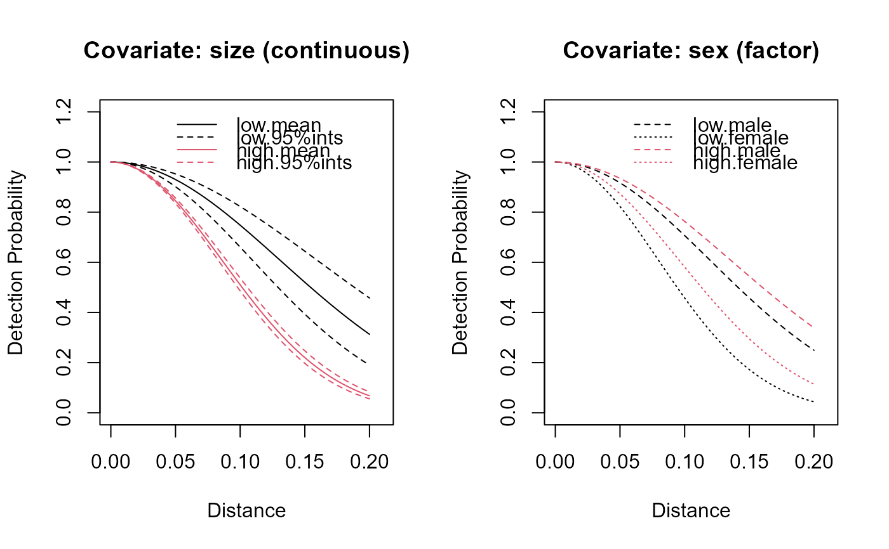

The detectability of the population is described by the values in this class.
Arguments
- key.function
specifies shape of the detection function (either half-normal "hn", hazard rate "hr" or uniform "uf")
- scale.param
numeric vector with either a single value to be applied globally or a value for each strata. These should be supplied on the natural scale.
- shape.param
numeric vector with either a single value to be applied globally or a value for each strata. These should be supplied on the natural scale.
- cov.param
Named list with one named entry per individual level covariate. Covariate parameter values should be defined on the log scale (rather than the natural scale), this is the same scale as provided in the ddf output in mrds and also in the MCDS output in Distance. Cluster sizes parameter values can be defined here. Each list entry will either be a data.frame containing 2 or 3 columns: level, param and where desired strata. If the region has multiple strata but this column is omitted then the values will be assumed to apply globally. The cluster size entry in the list must be named 'size'. Alternatively the list element may a numeric vector with either a single value to be applied globally or a value for each strata.
- truncation
the maximum perpendicular (or radial) distance at which objects may be detected from a line (or point) transect.
Value
Detectability-class object
Examples
# Multi-strata example (make sf shape)
s1 = matrix(c(0,0,0,2,1,2,1,0,0,0),ncol=2, byrow=TRUE)
s2 = matrix(c(1,0,1,2,2,2,2,0,1,0),ncol=2, byrow=TRUE)
pol1 = sf::st_polygon(list(s1))
pol2 = sf::st_polygon(list(s2))
sfc <- sf::st_sfc(pol1,pol2)
strata.names <- c("low", "high")
sf.pol <- sf::st_sf(strata = strata.names, geom = sfc)
region <- make.region(region.name = "Multi-strata Eg",
strata.name = strata.names,
shape = sf.pol)
density <- make.density(region = region,
x.space = 0.22,
constant = c(20,50))
covs <- list()
covs$size <- list(list(distribution = "poisson", lambda = 25),
list(distribution = "poisson", lambda = 15))
covs$sex <- data.frame(level = rep(c("male", "female"),2),
prob = c(0.5, 0.5, 0.6, 0.4),
strata = c(rep("low",2),rep("high",2)))
# Define the population description (this time using the density to determine
# the population size)
popdesc <- make.population.description(region = region,
density = density,
covariates = covs,
fixed.N = FALSE)
cov.param <- list()
cov.param$size <- c(log(1.02),log(1.005))
cov.param$sex <- data.frame(level = c("male", "female", "male", "female"),
param = c(log(1.5), 0, log(1.7), log(1.2)),
strata = c("low","low","high","high"))
# define the detecability
detect <- make.detectability(key.function = "hn",
scale.param = 0.08,
cov.param = cov.param,
truncation = 0.2)
plot(detect, popdesc)
